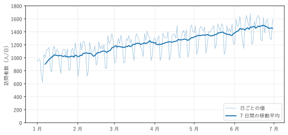
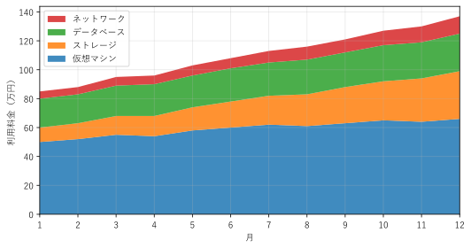
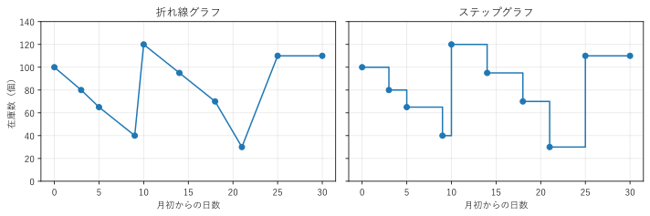
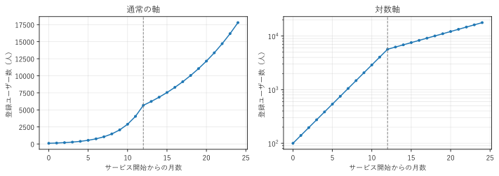
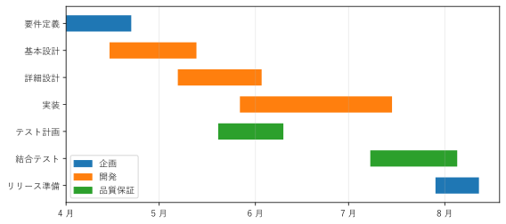
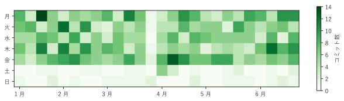

第 7 章 時間変化を見る
アクセス数、売上、応答時間、在庫数など、時間とともに変わる量（時系列データ）は、エンジニアが最もよく扱うデータの 1 つである。この章では、時間変化を見るためのグラフとして、折れ線グラフ、面グラフ、ステップグラフ、対数軸、ガントチャート、カレンダーヒートマップを扱う。
時系列データのグラフでは、横軸に時間を取り、左から右へ時間が進むように描くのが原則である。
折れ線グラフと移動平均
折れ線グラフは、時間順に並んだ値を線で結んだグラフである。値の増減の傾向、周期、急な変化を見るのに向いている。
図 22 は、架空の Web サイトの 1 日あたりの訪問者数（半年分）である。薄い線が日ごとの値、濃い線が 7 日間の移動平均である。

図 22 日ごとの訪問者数（薄い線）と 7 日間の移動平均（濃い線）
日ごとの値は、週末に訪問者数が減るため、のこぎりの歯のように上下している。この上下に隠れて、全体の傾向が読み取りにくい。7 日間の移動平均を取ると、曜日による上下が打ち消され、訪問者数が半年で約 1.5 倍に増えたことがはっきり分かる。
時刻 \(t\) の \(w\) 日間の移動平均 \(m_t\) は、直前の \(w\) 個の値 \(y\) の平均である。
周期のあるデータでは、周期の長さ（この例では 7 日）を \(w\) にすると、周期的な変動を取り除ける。なお、この定義の移動平均は直前の値だけを使うため、実際の変化より少し遅れて動く。
折れ線グラフは、次の点に注意して描く。
線で結んでよいのは、間の値に意味がある場合である。時系列の測定値は、点の間も連続的に変化していると考えられるので、線で結んでよい。カテゴリ（部署名など）を横軸に取った値を線で結ぶのは誤りである。
系列は多くても 5 本程度にする。それ以上の系列を比べるには、第 8 章のスモールマルチプルを使う。
縦軸は 0 から始めなくてもよい。折れ線グラフは長さではなく位置と傾きで値を表すため、棒グラフほど軸の始点にこだわる必要はない。ただし、範囲を狭くすると小さな変化が大きく見える点には注意する。
33def moving_average(values: np.ndarray, window: int) -> np.ndarray:
34 """直前の window 個の値の平均を返す。最初の window - 1 個は NaN."""
35 result = np.full(len(values), np.nan)
36 sums = np.convolve(values, np.ones(window), mode="valid")
37 result[window - 1:] = sums / window
38 return result
np.convolve() で、長さ window の窓の合計を一度に計算している。最初の window - 1 個は窓が満たないので、欠損値（NaN）にしている。matplotlib は NaN の点を描かない。
41def create_figure() -> Figure:
42 """訪問者数と移動平均の折れ線グラフを描く."""
43 dates, visitors = make_visitors()
44 fig, ax = plt.subplots(figsize=(8, 3.8))
45 ax.plot(dates, visitors, color="C0", alpha=0.4, linewidth=1,
46 label="日ごとの値")
47 ax.plot(dates, moving_average(visitors, WINDOW), color="C0",
48 linewidth=2, label=f"{WINDOW} 日間の移動平均")
49 # 目盛りの日付を「1 月」の形式で表示する
50 ax.xaxis.set_major_formatter(
51 lambda value, _: f"{mdates.num2date(value).month} 月")
52 ax.set_ylabel("訪問者数（人/日）")
53 ax.set_ylim(0, 1800)
54 ax.grid(alpha=0.3)
55 ax.legend(loc="lower right")
56 fig.tight_layout()
57 return fig
サンプルの全体：ch07_line.py
積み上げ面グラフ
合計と内訳の両方の時間変化を見せるには、内訳の折れ線を積み上げ、線の下を塗りつぶした積み上げ面グラフを使う。図 23 は、架空のクラウド利用料金の月別推移を、サービスの種類ごとに積み上げたものである。

図 23 クラウド利用料金の内訳の積み上げ面グラフ
合計が 1 年で約 1.6 倍に増えたことと、仮想マシンが最も大きな割合を占めることが分かる。一方、積み上げ棒グラフと同じく、一番下の層（仮想マシン）以外は下端がそろっていないため、個々の層の増え方は読み取りにくい。この図から「ストレージが 3 倍以上に増えた」ことを読み取るのは難しい。個々の内訳の変化が重要な場合は、内訳ごとの折れ線グラフを描く。
23def create_figure() -> Figure:
24 """料金の内訳を積み上げ面グラフで描く."""
25 fig, ax = plt.subplots(figsize=(7.5, 4))
26 ax.stackplot(MONTHS, list(COSTS.values()), labels=list(COSTS),
27 alpha=0.85)
28 ax.set_xticks(MONTHS)
29 ax.set_xlim(1, 12)
30 ax.set_xlabel("月")
31 ax.set_ylabel("利用料金（万円）")
32 ax.legend(loc="upper left", reverse=True) # 凡例を積み上げの順に並べる
33 ax.grid(alpha=0.3)
34 fig.tight_layout()
35 return fig
サンプルの全体：ch07_area.py
ステップグラフ
在庫数、料金プラン、設定値のように、ある時点で値が切り替わり、次に切り替わるまで一定に保たれるデータには、ステップグラフ（階段状のグラフ）が実態に合う（図 24）。

図 24 在庫数の変化の折れ線グラフ（左）とステップグラフ（右）
左の折れ線グラフは、点の間を斜めに結ぶため、在庫が徐々に減っていったように見える。実際には、在庫は入荷や出荷の時点で一度に変わる。右のステップグラフは、値が次の変化まで一定であることを正しく表している。例えば、月初から 9 日後に 40 個になった在庫は、10 日後の入荷まで 40 個のまま保たれ、入荷で 120 個に増えたことが分かる。
19def create_figure() -> Figure:
20 """同じデータを折れ線グラフとステップグラフで描く."""
21 fig, (ax_left, ax_right) = plt.subplots(1, 2, figsize=(10, 3.4),
22 sharey=True)
23 ax_left.plot(DAYS, STOCK, marker="o")
24 ax_left.set_title("折れ線グラフ")
25 ax_left.set_ylabel("在庫数（個）")
26 # where="post": 各点の値を次の点まで保つ
27 ax_right.step(DAYS, STOCK, where="post", marker="o")
28 ax_right.set_title("ステップグラフ")
29 for ax in (ax_left, ax_right):
30 ax.set_xlabel("月初からの日数")
31 ax.set_ylim(0, 140)
32 ax.grid(alpha=0.3)
33 fig.tight_layout()
34 return fig
step() の where="post" は、各点の値を次の点まで保つことを指定する。
サンプルの全体：ch07_step.py
対数軸
ユーザー数の増加、感染者数の増加のように、一定の割合で増える量は、指数関数的に増える。通常の軸（線形軸）では、初期の変化がつぶれて見えず、後半の急増だけが目立つ。このような量には、目盛りが 10 倍ずつ等間隔に並ぶ対数軸を使う。
図 25 は、架空のサービスの登録ユーザー数である。12 か月目までは毎月 40% ずつ、それ以降は毎月 10% ずつ増えている。

図 25 登録ユーザー数の通常の軸のグラフ（左）と対数軸のグラフ（右）
通常の軸では、12 か月目以降の方が急に増えているように見える。しかし、増加の割合は 12 か月目を境にむしろ下がっている。対数軸では、一定の割合での増加が直線になり、その傾きが増加の割合を表す。右の図では、12 か月目で傾きが緩やかになったことがはっきり分かる。
対数軸を使うときは、軸ラベルや目盛りで対数軸であることを明示する。読み手が通常の軸だと思って読むと、変化の大きさを大きく誤解する。また、対数軸では 0 や負の値を描けない。
28def create_figure() -> Figure:
29 """同じデータを通常の軸と対数軸で描く."""
30 months, users = make_users()
31 fig, (ax_left, ax_right) = plt.subplots(1, 2, figsize=(10, 3.6))
32 ax_left.plot(months, users, marker=".")
33 ax_left.set_title("通常の軸")
34 ax_right.plot(months, users, marker=".")
35 ax_right.set_yscale("log")
36 ax_right.set_title("対数軸")
37 for ax in (ax_left, ax_right):
38 ax.axvline(12, color="gray", linestyle="--", linewidth=1)
39 ax.set_xlabel("サービス開始からの月数")
40 ax.set_ylabel("登録ユーザー数（人）")
41 ax.grid(alpha=0.3, which="both")
42 fig.tight_layout()
43 return fig
サンプルの全体：ch07_log_scale.py
ガントチャート
ガントチャートは、作業ごとに、開始日から終了日までの期間を横棒で表すグラフである。プロジェクトの計画や、ジョブの実行時間の分析に使う。図 26 は、架空のシステム開発プロジェクトの計画である。

図 26 システム開発プロジェクトのガントチャート。色は担当を表す
作業の期間、作業の重なり、担当ごとの負荷の集中する時期が分かる。例えば、5 月下旬から 6 月上旬は、開発担当の詳細設計と実装が重なっている。作業間の依存関係（「基本設計が終わってから詳細設計を始める」など）を示すには、棒の間を矢印で結ぶか、第 12 章の DAG を併用する。
28def create_figure() -> Figure:
29 """作業のガントチャートを描く."""
30 fig, ax = plt.subplots(figsize=(8, 3.6))
31 for row, (_, start, end, owner) in enumerate(TASKS):
32 begin = np.datetime64(start)
33 days = int((np.datetime64(end) - begin).astype(int))
34 # 横軸は matplotlib の日付の数値（1 日が 1）なので、日数を幅に使える
35 ax.barh(row, days, left=mdates.date2num(begin), height=0.6,
36 color=COLORS[owner])
37 ax.set_yticks(range(len(TASKS)), [task[0] for task in TASKS])
38 ax.invert_yaxis() # 最初の作業を上に置く
39 ax.xaxis_date()
40 ax.xaxis.set_major_locator(mdates.MonthLocator())
41 ax.xaxis.set_major_formatter(
42 lambda value, _: f"{mdates.num2date(value).month} 月")
43 ax.grid(axis="x", alpha=0.3)
44 handles = [Patch(color=color, label=owner)
45 for owner, color in COLORS.items()]
46 ax.legend(handles=handles, loc="lower left")
47 fig.tight_layout()
48 return fig
横棒は barh() の left 引数に開始日、幅に日数を指定して描く。matplotlib の日付の軸では 1 日が数値の 1 にあたるので、日数をそのまま幅に使える。
サンプルの全体：ch07_gantt.py
カレンダーヒートマップ
日ごとの値を、縦に曜日、横に週を取ったマスの色で表すグラフを、カレンダーヒートマップという。GitHub のコントリビューションの表示で知られている。曜日の周期と、長期の変化を同時に見られる。

図 27 リポジトリの日ごとのコミット数のカレンダーヒートマップ
図 27 からは、土曜日と日曜日にコミットが少ないことと、3 月下旬の 1 週間はコミットが少ない（休暇と考えられる）ことが読み取れる。折れ線グラフでは、このような曜日の規則性と例外の週を、同時に見つけるのは難しい。
色の濃さは位置ほど正確に読めないため、カレンダーヒートマップは、パターンや例外を見つける探索に向いている。正確な値の比較には向かない。
44def create_figure() -> Figure:
45 """コミット数のカレンダーヒートマップを描く."""
46 fig, ax = plt.subplots(figsize=(9, 2.8))
47 image = ax.imshow(make_commits(), cmap="Greens", aspect="equal")
48 ax.set_yticks(range(7), WEEKDAYS)
49 ticks, labels = month_ticks()
50 ax.set_xticks(ticks, labels)
51 fig.colorbar(image, ax=ax, label="コミット数", shrink=0.8)
52 fig.tight_layout()
53 return fig
サンプルの全体：ch07_calendar_heatmap.py
まとめ
時系列データは、横軸に時間を取った折れ線グラフが基本である。周期的な変動は移動平均で取り除ける。
合計と内訳の推移は積み上げ面グラフで示せるが、個々の内訳の変化は読み取りにくい。
値が段階的に変わるデータには、ステップグラフを使う。
一定の割合で増える量には、対数軸を使う。対数軸であることは明示する。
作業の期間はガントチャートで、曜日の周期はカレンダーヒートマップで示す。